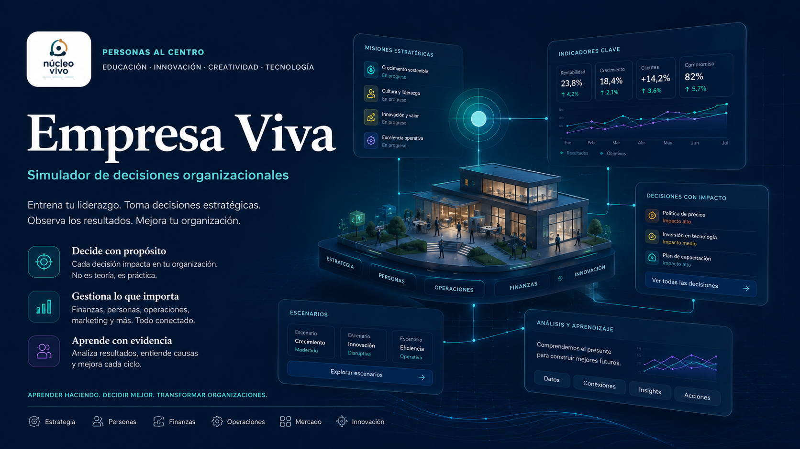

Investigar
Revisa empresa, documentos, indicadores y perspectivas.

Decisiones empresariales · Ingeniería Comercial
Investiga organizaciones ficticias, analiza evidencia, construye decisiones y observa consecuencias en una experiencia completa de Núcleo Vivo Lab.

Cada caso integra señales financieras, comerciales, operacionales y humanas. La persona revisa documentos, conversa con actores ficticios y distingue síntomas, causas, intereses y riesgos.
Las consecuencias dependen de la coherencia entre diagnóstico, evidencia y decisiones bajo restricciones. La práctica invita a fundamentar las decisiones y revisar sus efectos dentro del caso.
Una ruta completa dentro de la aplicación oficial.
Revisa empresa, documentos, indicadores y perspectivas.
Separa síntomas, causas, intereses y riesgos.
Distribuye recursos limitados entre alternativas posibles.
Defiende una propuesta y observa sus efectos simulados.
Empresa Viva no se conecta con organizaciones ni fuentes externas. No ingreses datos reales, sensibles, personales o empresariales. Sus resultados tienen fines formativos y no constituyen asesoría ni evaluación empresarial real.
Abrir los ocho casos